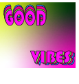

Title: Broken Camera
With this project, it was very hard and stressful as it was the first time that I used photoshop.
The meaning behind the broken camera is to show my struggles in life.
The reason why I used a camera is becuase my major is photography.
I have used photography in my life to cope with what I've been through.
Title:Perspective

For project 2, I took my brother and his dog as my main focus.
I wanted to really be playful in this photo so I moved the dog around and even put her in the moon.
Title: This is Me

Project 3 was all about identity, you see I don't know myself fully to tell you what my identity is.
What I decided to do is showcase the people who have impacted my identity.
I also added in the raindow colors to show that my sexuality is apart of who I am.
Title: CIA & Personal Logos
For this project I used adobe illustrator for the first time.
The CIA logo I wanted to make it look like our community coming together.
With my personal logo I really wanted to make my logo more mature since I have grown from when I started my business.
Title: Good VIbes
My message for this project was Good Vibes.
I picked Good Vibes because I wanted to created a trippy but fun energy.
Title: The Story Never Lost its Romance

Project 6 we made greeting cards and my message on the inside is; The Story Never Lost its Romance.
For the design I wanted to show the heart breaking and than the heart being healed.
Showing that this story between the couple never lost its romance.
Title: Digital Growth

As project 7 is a self reflection mash-up using both Adobe Illustrator and Photoshop.
This project I wanted to show how far I have come from since school first started.
I used photos from my photo/video class for this project to also show my new found enjoyment of surrealism.
Observational Drawing